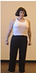
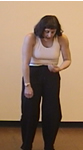

Unit
One - Introduction to Drama
Module 2: Actor's Tools
Lesson 4 - Movement
Introduction:
Movement is one of the key methods of communication on the
stage. Actors use movement to reveal their characters, establish
relationships, objectives and conflict, and to create visual beautiful
theatre. Movement creates drama and excitement on the stage.
Objectives:
- to become confident at communicating character through movement
and gesture.
- to
concentrate
during drama experiences.
- to
articulate
the meaning of three or more movements.
Resources:
a large space for stretching, two hours on-line access, Warm-up
Evaluation (pdf), flexible clothing
CELs:
C, TL, IL
Components:
Cultural/Historical, Creative/Productive, Critical/Responsive
Activities:
Activity
1 - Warming Up
Start
by viewing video on stretching
and doing the activities.
|
Posture
Students must be aware of their natural body posture
and be able to change it at will.
|
Watch Alignment Video. In order to breath correctly
and move well,
students need to have good physical alignment.
|
|
Students
should find a partner and designate themselves A and B.
They stand facing each other. A imitates B's natural
stance as completely as possible. As B tries to align him
or herself to match the correct posture demonstrated in
the photograph on the right, A continues imitating, so that
B has a "mirror". When B's posture is correct,
A and B switch jobs and repeat the process. (3 minutes)
|

Posture
is overly
erect - bluff
|

Posture
is too slumped - caved
|
|
Activity
2 - Mirroring
Students should stand and sit opposite a partner, and designate
themselves A and B. A leads a series of arm movements which
B mimics as if he or she is a mirror. When the movements
flow naturally in a dance-like pattern, A and B should switch
who is leading the movement. As they progress, A and B can
choose no leader and just allow impulse to dominate. (1o
minutes)
|
Stretching
Out
The athletic
stretches should be used as a warm up for all physical drama.
They prevent some strain injuries and make the body a more malleable
tool. Any stretches may be chosen provided that the following
conditions are met:
|
|
•
stretches are suited to the fitness level of the students
• all major groups of muscles are worked
• stretches are held for at least the count of 20
|
Yoga
Yoga stretches and breathing are ideally suited to physical warm-up
for drama. Yoga uses a variety of poses in conjunction with breath
pattern to lengthen body movement and create warm, flexible muscle
groups. You may choose to have your students view several of the
yoga sites each choose a pose to teach the class. No two students
may choose the pose. Everyday for a week, have several students
teach their poses to the class. Assign a small participation mark
to the yoga periods.
Good
Yoga and stretching links are available through the links
page.
Introductory
Movement
Activity
3 - Leading off
All of us
naturally have a section or part of our bodies that moves first
or leads our movement. We must determine where we lead from and
change this as it is appropriate to the character. As a group,
start moving around the room. Each actor must determine how he
or she is leading. Partners who observe each other may be used.
As the group keeps moving, individuals shout out ways to lead
and the group tries the walk using the lead suggested. For example,
someone might shout knees, and everyone might wind up walking
like the scarecrow in "Wizard of Oz". Continue this
exercise until most options for leading have been tried. (5 minutes)
Activity
4 - Breaking down a movement
There
are seven basic principles of stage movement:
|
1.
Movement must have a reason.
2. Movement should be simplified to its most basic elements.
3. Movement must be consistent with a character's age and
body type.
4. Movement should be heightened or bigger than life.
5. Movement must be visible to the audience ("open"
to the audience)
6. Movement should reveal character traits or beliefs including
status and relationship.
7. Movement must create pleasing stage pictures.
|
Each
actor should choose a simple movement such as sitting down, crossing
the stage or opening a door. Students should then group themselves
with one or two other actors who are not doing the same movement,
and create a scene. No conversation may be used, and each actor
must satisfy all seven principles of movement. The groups should
rehearse and analyze each others movement for about 10 minutes.
The scenes are then presented to the class and discussed.
Activity
5 - Warm-up Assignment:
Using the Internet, conduct a search for elements of a good physical
warm-up.
Include
the following items:
• stretching for face
• stretching for arms and legs
• stretching for back and neck
• energizing activities
• exercises to develop correct posture and/or center the
actor
Create
a written version of the warm-up using some form of word processing
software such as Word. Cut and paste in warm-up material that
you find, including photos, and list each web site under the material
that you find. The warm-up should take 10-15 minutes when completed
by an actor. Finished versions should be printed and saved by
the student, then e-mailed to the teacher for evaluation. (1-2
hours)
Instructional
Strategies:
computer assisted instruction, peer practice, games, research
project
Evaluation:
Teachers observe most of the movement exercises and formally evaluate
the warm-up document based on variety, requirements, layout, mechanics,
and length.
Warm-up
evaluation (pdf)
On-line
Activity Alternatives:
Pairs at home schools can do the warm-up and leading activities.
The written warm-up should be created in a word processor and
e-mailed or faxed to the teacher.
Next
Lesson /
Student Lesson / Previous
Lesson